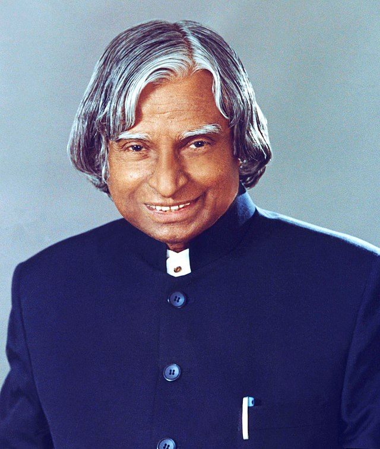

A.P.J.Abdul kalam
1931-2015
Missile Man of India
Dr. APJ Abdul Kalam was the eleventh President of India, serving from 2002 to 2007. He was born on May 15, 1931, in Rameswaram, Tamil Nadu, and studied physics as well as aeronautical engineering. In 2002, APJ Abdul Kalam was chosen as India’s 11th President, Having backing from both the ruling Bharatiya Janata as well as the opposing Indian National Congress After his one tenure as President, APJ Abdul Kalam resumed civilian life in teaching, writing, and public service.
Biographics
- Eternal Quest: Life and Times of Dr Kalam by S Chandra; Pentagon Publishers, 2002.
- President A P J Abdul Kalam by R K Pruthi; Anmol Publications, 2002.
- A P J Abdul Kalam: The Visionary of India by K Bhushan, G Katyal; A P H Pub Corp, 2002.
- A Little Dream (documentary film) by P. Dhanapal; Minveli Media Works Private Limited, 2008.
- The Kalam Effect: My Years with the President by P M Nair; Harper Collins, 2008.
- My Days With Mahatma Abdul Kalam by Fr A K George; Novel Corporation, 2009.
- A.P.J. Abdul Kalam: A Life by Arun Tiwari; Haper Collins, 2015.
- The People's President: Dr A P J Abdul Kalam by S M Khan; Bloomsbury Publishing, 2016.